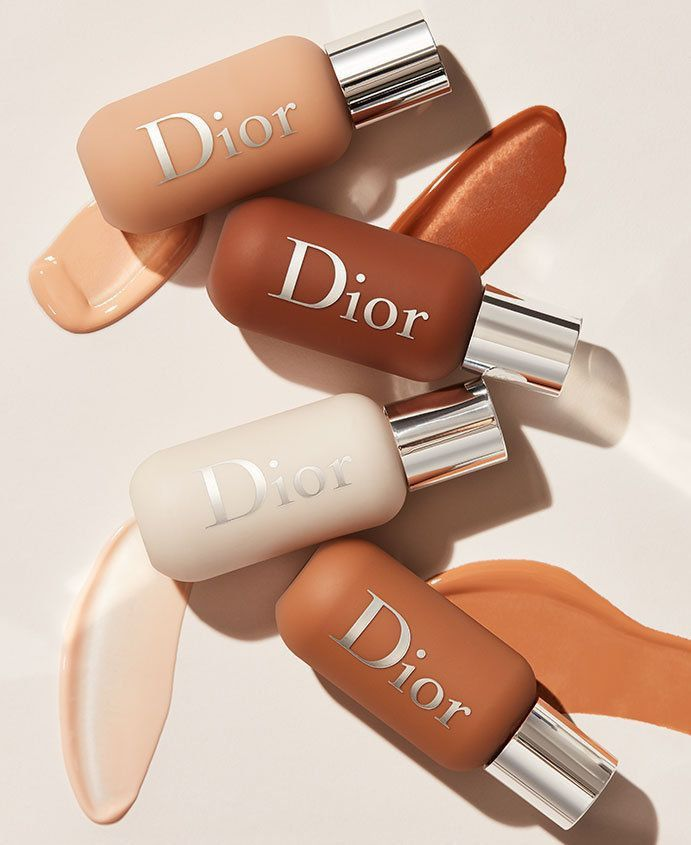
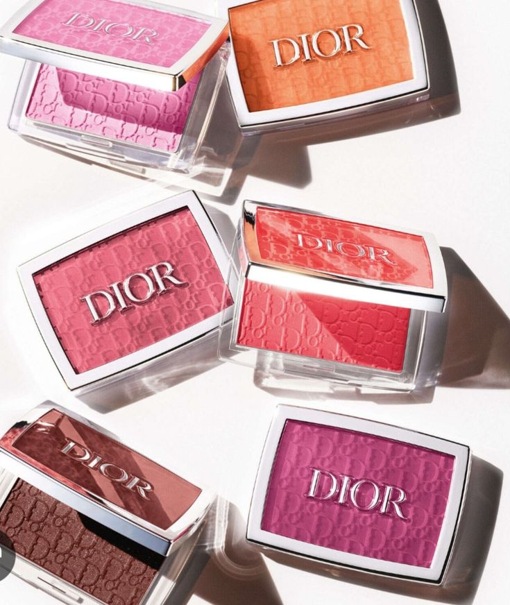
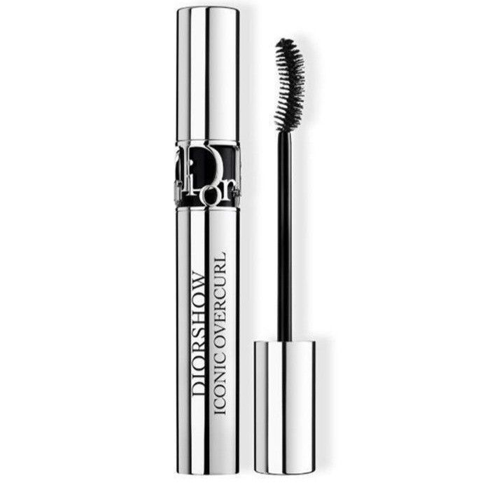
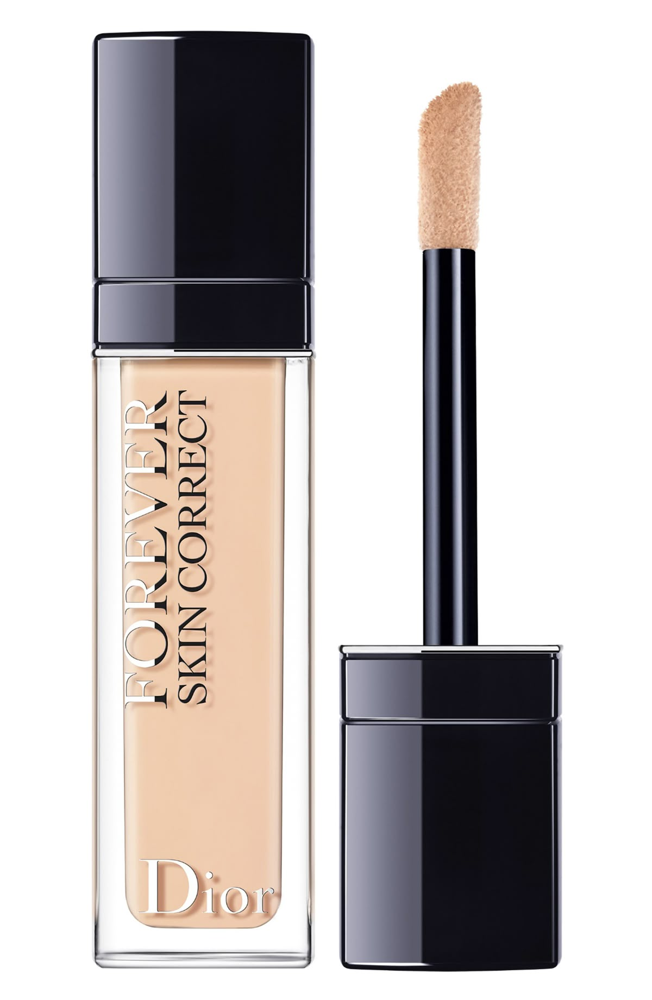
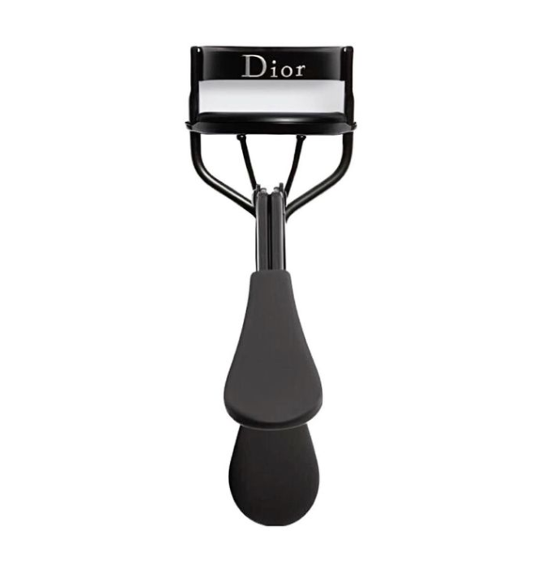
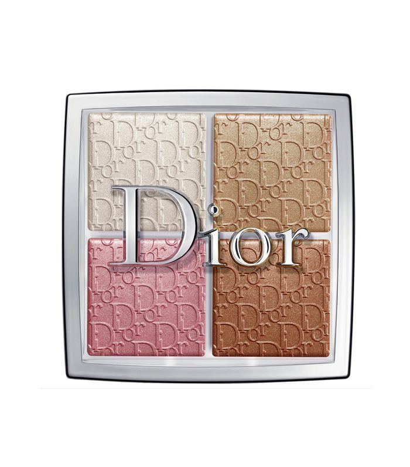
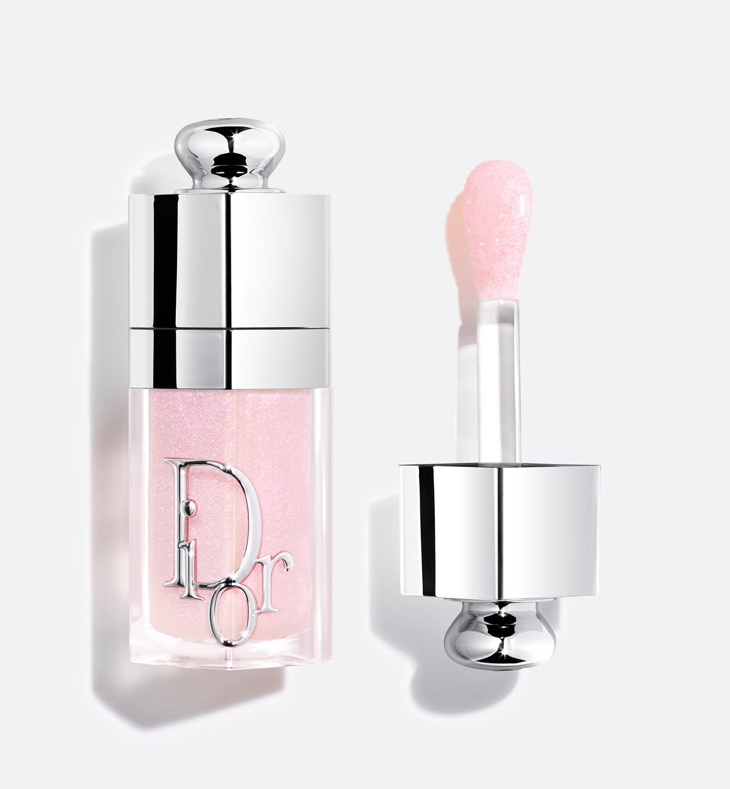
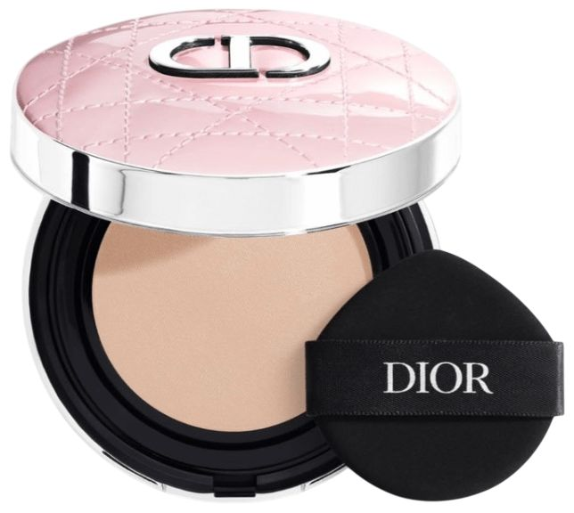
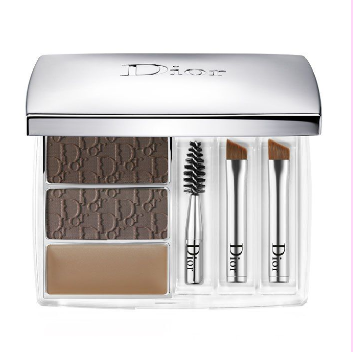

Produtos em destaque!

Base Facial
A base Dior ajuda a uniformizar o tom da pele, proporcionando uma cobertura confortável e um acabamento sofisticado. Ideal para criar uma pele mais bonita e preparada para o restante da maquiagem.

Blush Facial
O blush Dior adiciona um toque de cor às maçãs do rosto, deixando a aparência mais saudável e iluminada. Suas diferentes tonalidades permitem criar desde um visual delicado até uma maquiagem mais marcante.

Máscara de cílios
A mascara de cilios Dior realça os cílios, proporcionando definição, volume e destaque ao olhar. É um dos produtos essenciais para finalizar a maquiagem dos olhos..

Corretivo
Ajuda a uniformizar a aparência da pele e suavizar olheiras e pequenas imperfeições. Sua textura permite um acabamento natural e confortável ao longo da maquiagem.

Curvex
Ajuda a curvar os cílios, deixando o olhar mais aberto e destacado. É um ótimo complemento para o rímel e pode ser usado antes da aplicação da máscara.

Iluminador
Acrescenta luminosidade à pele, destacando pontos estratégicos do rosto. Ele proporciona um brilho elegante e sofisticado, deixando o acabamento mais radiante.

Lip oil
Combina hidratação e brilho em um único produto. Sua textura leve deixa os lábios com aparência mais macia, confortável e luminosa, sendo perfeito para um visual delicado e sofisticado.

Pó compacto
Controla o brilho e finaliza a maquiagem, deixando a pele com uma aparência mais uniforme e sofisticada. É ideal para selar a maquiagem e prolongar seu acabamento ao longo do dia.

Mini kit para sombrancelha
Um conjunto completo para definir, preencher e valorizar as sobrancelhas. O kit ajuda a criar um acabamento natural e bem cuidado, deixando o olhar mais marcante e harmonioso.
Curiosidades das maquiagens Dior